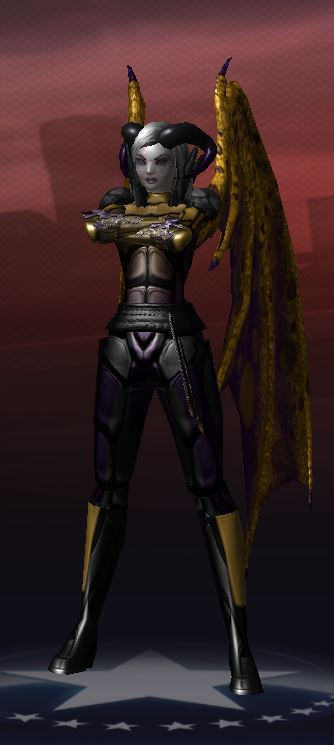
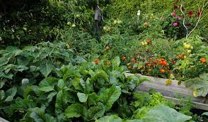

Bonjour mon nom est Natacha Gariépy

Études
J'ai fait un cours de bureautique plus tôt dans ma carrière, puis un DEP et en 2010 une Certification MOS Advanced pour la suite Office 2010 (maintenant simplement Microsoft).
Pendant des années, j'ai suivi différente formation de manière autodidacte pour commencer avec des ouvrages et ensuite via Lynda.com qui est devenu plus récemment LinkedIn Learning.
- École primaire Frank Laliberté;
- Polyvalente Pierre Dupuy;
- Cégep du Vieux Montréal (Lettres);
- CSM;
- Microsoft - MOS Office Advanced.
Sport
Je suis active, mais je ne pratique pas de sport en tant que tel. Il y a quelques années, j'ai fait de la musculation et tenté à plusieurs reprises d'aller au gym (beaucoup d'argent de perdu au fil des années). J'ai récemment fait l'acquisition de raquettes de neige et j'ai bien hâte de faire cette activité.

| Nom du sport |
Autres informations |
Expérience |
| Musculation |
Upper Body et Lower Body |
20 ans |
| Gym |
Cardio |
Toujours |
Loisir
J'aime le jardinage, jouer à des jeux en ligne (tout récemment sur un serveur mon jeux préféré d'il y a quelques années, City of Heroes, est de retour.)

- Jardinage;
;
- Jeux en lignel;
- Lecture sur ces sujets;
- Séries sur Nexflix.
Rêve
Je viens de prendre les premiers pas pour réaliser un rêve de toujours, produire le plus possible de ma nourriture. J'ai maintenant une terre qui me permettra de faire pousser tout ce que j'ai besoin ainsi qu'élever des poules pondeuses et, éventuellement, des chèvres.
